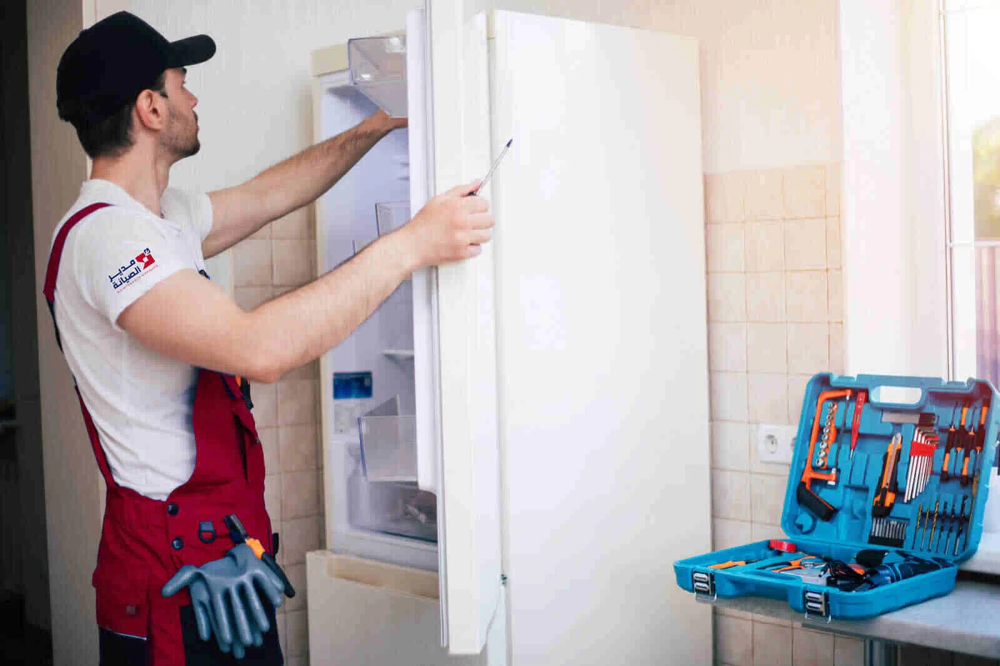

الدليل الأساسي لصيانة الثلاجات: لماذا من المهم الاستعانة بالمحترفين؟
تعتبر الثلاجة عصب الحياة في كل مطبخ، فهي تعمل بلا توقف للحفاظ على طعامنا طازجًا وصحيًا، لكن هل فكرت يومًا في أهمية صيانتها بشكل دوري؟ إن إهمال الأعطال البسيطة قد يتسبب في مشاكل أكبر وأكثر تكلفة على المدى الطويل.
من هنا تأتي أهمية الاستعانة بخبرة فني صيانة ثلاجات محترف، فهو لا يقوم بإصلاح العطل فحسب، بل يضمن عمل الثلاجة بكفاءة أعلى، مما يطيل من عمرها الافتراضي ويوفر عليك مصاريف غير متوقعة.
هل تلاحظ أن ثلاجتك لا تبرد كما في السابق أو يصدر منها صوت مزعج؟ لا تتجاهل هذه العلامات، وتواصل مع التوكيل للصيانة للاستفسار عن خدمة إصلاح الثلاجات المناسبة لجهازك.
ما هي أهمية الصيانة الدورية للثلاجات؟
الصيانة الدورية للثلاجة ليست مجرد إجراء وقائي، بل هي استثمار ذكي يضمن لك راحة البال ويوفر عليك الكثير من المال والوقت على المدى الطويل. فالثلاجة التي تعمل بكفاءة تستهلك طاقة أقل، مما ينعكس إيجابيًا على فاتورة الكهرباء الشهرية.
كما أن الفحص المنتظم على يد فني صيانة ثلاجات متخصص يساعد في اكتشاف الأعطال البسيطة قبل أن تتفاقم وتتحول إلى مشاكل كبيرة ومكلفة، مثل تلف الضاغط (الموتور).
هذا الاهتمام المستمر يقلل من تآكل المكونات الداخلية ويطيل من العمر الافتراضي للجهاز، مما يضمن لك الاستفادة القصوى من ثلاجتك لسنوات طويلة قادمة.
علامات تدل على أن ثلاجتك بحاجة إلى صيانة فورية
هناك عدة مؤشرات واضحة تنبهك إلى ضرورة الاتصال بخدمة تصليح ثلاجات متخصصة دون تأخير. تجاهل هذه العلامات قد يؤدي إلى تفاقم المشكلة وزيادة تكاليف الإصلاح أو حتى تلف الطعام:
- ضعف التبريد: إذا لاحظت أن الأطعمة والمشروبات ليست باردة بالشكل المعتاد، أو أن قسم التجميد لا يقوم بعمله جيدًا، فقد يكون هناك خلل في نظام التبريد أو نقص في غاز الفريون.
- تراكم الثلج بشكل مفرط: وجود طبقة سميكة من الثلج في الفريزر، خاصة في الثلاجات من نوع “نوفروست”، يدل غالبًا على مشكلة في نظام إذابة الثلج (الديفروست).
- تسرب المياه: سواء كان التسرب داخل الثلاجة أو أسفلها، فهو يشير عادةً إلى انسداد في خرطوم التصريف أو تلف في كاوتش الباب.
- أصوات غير طبيعية: الأصوات المزعجة مثل الطنين العالي، أو الطقطقة المستمرة، قد تكون مؤشرًا على وجود مشكلة في المروحة أو موتور الثلاجة.
- ارتفاع فاتورة الكهرباء: إذا ارتفعت قيمة الفاتورة بشكل مفاجئ وغير مبرر، فقد تكون الثلاجة تستهلك طاقة أكبر من المعتاد بسبب انخفاض كفاءتها.
كيف تختار أفضل فني صيانة ثلاجات؟
اختيار فني محترف لصيانة الثلاجات هو الخطوة الأهم لضمان إصلاح العطل بكفاءة وجودة. فني غير محترف قد يتسبب في ضرر أكبر للجهاز. لذلك، عند البحث عن فني لإصلاح الثلاجات، يجب أن تأخذ في اعتبارك عدة معايير أساسية لضمان الحصول على أفضل خدمة ممكنة.
- الخبرة والسمعة: ابحث عن فني أو شركة ذات سمعة طيبة وتقييمات إيجابية من عملاء سابقين. الخبرة في التعامل مع مختلف أنواع وماركات الثلاجات تساعد على تشخيص العطل بدقة وسرعة.
- التخصص والاحترافية: تأكد من أن الفني متخصص في صيانة الثلاجات تحديدًا، ولديه معرفة بالتقنيات الحديثة والموديلات الذكية. الفني المحترف يستخدم أدوات تشخيص مناسبة لتحديد سبب المشكلة بدقة.
- الشفافية في التكاليف: اطلب تقديرًا للتكلفة قبل بدء عملية الإصلاح لتجنب أي رسوم غير متوقعة. الشركة الموثوقة تكون واضحة بشأن أسعارها وتكاليف قطع الغيار.
- ضمان الخدمة: اختر فنيًا يقدم ضمانًا على أعمال الصيانة وقطع الغيار التي يتم تركيبها، وفق شروط الضمان المعلنة، فهذا يمنحك طمأنينة إضافية.
نصائح لإطالة العمر الافتراضي لثلاجتك
للحفاظ على ثلاجتك وتجنب الأعطال المتكررة، يمكنك اتباع بعض الإرشادات البسيطة التي تضمن عملها بكفاءة لسنوات أطول. هذه الممارسات لا تتطلب مجهودًا كبيرًا لكنها تحدث فرقًا واضحًا في أداء الجهاز:
- التنظيف الدوري: احرص على تنظيف ملفات المكثف الموجودة خلف الثلاجة أو أسفلها مرة كل ستة أشهر على الأقل. تراكم الأتربة عليها يجبر الضاغط على العمل بجهد أكبر، مما يقلل من عمره الافتراضي.
- ضبط درجة الحرارة المناسبة: اضبط درجة حرارة الثلاجة بين 3 و4 درجات مئوية، والفريزر عند -18 درجة مئوية. هذا الإعداد هو الأمثل للحفاظ على الطعام طازجًا دون إهدار للطاقة.
- ترك مساحة للتهوية: تأكد من ترك مسافة كافية حول الثلاجة (حوالي 5 سم من الجوانب والخلف) للسماح بتدفق الهواء بشكل جيد، مما يمنع ارتفاع درجة حرارة المحرك.
- فحص إطار الباب (الجوان): تأكد من أن الإطار المطاطي لباب الثلاجة يغلق بإحكام ولا توجد به تشققات. أي تسريب للهواء البارد يزيد من استهلاك الطاقة ويؤثر على كفاءة التبريد.
- تجنب وضع الطعام الساخن: اترك الأطعمة الساخنة لتبرد قليلًا قبل وضعها في الثلاجة، لأنها ترفع درجة الحرارة الداخلية وتجعل المحرك يعمل بجهد إضافي.
ما هي تكلفة إصلاح أعطال الثلاجات؟
تحديد تكلفة دقيقة لإصلاح الثلاجة يعتمد على عدة متغيرات، حيث تختلف كل حالة عن الأخرى. فهم هذه العوامل يساعدك على تكوين فكرة أفضل عن الميزانية المتوقعة قبل الاتصال بفني تصليح ثلاجات.
العوامل التي تحدد التكلفة:
- نوع العطل: الأعطال البسيطة مثل تغيير لمبة أو تسليك خرطوم الصرف تكون تكلفتها منخفضة. أما الأعطال المعقدة مثل إصلاح تسريب في دائرة الفريون أو تغيير الضاغط (الموتور) فتكون أكثر تكلفة بسبب صعوبة الإصلاح وسعر قطع الغيار.
- عمر وموديل الثلاجة: إصلاح الثلاجات القديمة قد يكون أكثر تكلفة لصعوبة العثور على قطع غيار متوافقة، بينما تتميز الموديلات الحديثة بتوفر قطع غيارها ولكن قد تكون أسعارها مرتفعة.
- سعر قطعة الغيار: تكلفة قطعة الغيار نفسها تلعب دورًا رئيسيًا في السعر الإجمالي. على سبيل المثال، تكلفة تغيير ترموستات تختلف كليًا عن تكلفة تغيير لوحة التحكم الإلكترونية.
- أجرة الفني: تختلف أجرة الفحص والإصلاح بناءً على خبرة الفني والشركة التي يعمل بها، بالإضافة إلى الموقع الجغرافي للعميل.
أهمية استخدام قطع غيار أصلية في صيانة الثلاجات
عندما يتعلق الأمر بإصلاح ثلاجتك، قد يبدو توفير المال عن طريق شراء قطع غيار مقلدة أو تجارية خيارًا مغريًا، ولكنه قد يكلفك أكثر على المدى البعيد. استخدام قطع الغيار الأصلية أمر ضروري لضمان عودة الجهاز للعمل بكفاءته المعهودة.
فالقطع الأصلية مصممة ومصنعة من قبل الشركة المصنعة للجهاز نفسه، مما يضمن توافقها الكامل مع باقي المكونات. هذا التوافق يضمن أداءً مثاليًا ويقلل من استهلاك الطاقة، على عكس القطع المقلدة التي قد تسبب خللًا في أداء أجزاء أخرى.
علاوة على ذلك، تخضع قطع الغيار الأصلية لاختبارات جودة وسلامة صارمة، مما يضمن أمان التشغيل ويطيل من العمر الافتراضي للثلاجة.
ثلاجتك محتاجة فحص؟
لا تنتظر حتى يتفاقم العطل. تواصل مع التوكيل للصيانة للاستفسار عن الخدمة المناسبة، سواء من خلال الزيارة المنزلية أو زيارة مقر الشركة.
أسئلة شائعة
هل يمكن وضع الثلاجة بجانب البوتاجاز أو الفرن؟
لا يُنصح بذلك إطلاقًا. الحرارة المنبعثة من الفرن أو البوتاجاز تجبر موتور الثلاجة على العمل لوقت أطول وبجهد أكبر للحفاظ على البرودة، مما يزيد من استهلاك الكهرباء ويقلل من عمره الافتراضي.
ما هو سبب تراكم المياه أسفل الأدراج الخاصة بالخضروات؟
السبب الأكثر شيوعًا هو انسداد فتحة أو خرطوم الصرف الخاص بتصريف المياه الناتجة عن عملية إذابة الثلج التلقائي. يمكن تنظيف هذه الفتحة بعناية لإصلاح المشكلة، ولكن إذا استمرت، يجب استدعاء فني مختص.
كم من الوقت يجب الانتظار قبل توصيل الثلاجة بالكهرباء بعد نقلها؟
يجب ترك الثلاجة في وضعها الرأسي لمدة لا تقل عن 4 إلى 6 ساعات قبل تشغيلها. هذه الفترة تسمح لزيت الضاغط الموتور بالاستقرار مرة أخرى في مكانه بعد تحريكه أثناء النقل.
مقالات مرتبطة
هل تواجه مشكلة أو عطلاً في جهازك؟
تواصل مع فريق "التوكيل للصيانة" الآن للحصول على استشارة فنية وفحص منزلي فوري بأعلى معايير الدقة والأمان.